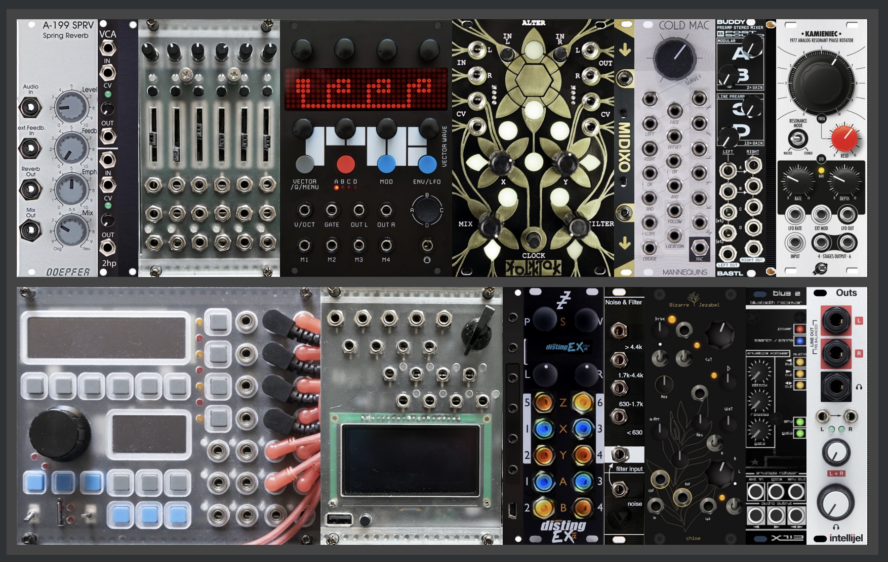
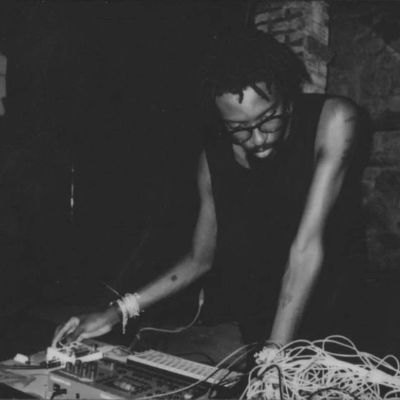

The Audio portal hosts installation work, performance projects, speaker building, scores and DIY electronics.
My proposed work explores a continuation of a series of multichannel compositions titles information retrieval and the cybernetics of afrofutirism, exploring an anthology of sound related to the black experience and abstract them into an imagined futurist black world through synthesis, sampling, granular and various other sound design and spatialization techniques. These themes are broadly represented with an abstraction and representation of the extended dream world. Although this work is personal to my experience, I hope to expand on the topic as the human American experience and how we interact with a progressive and future forward US community, entangled with diversity and all inclusive of BIPOC and Queer communities. The multichannel format allows sound to move around and through listeners, creating shifting relationships between intimacy and collectivity. Through deep listening and collecting sounds I hope to represent a communal healing through sound. The work embraces the healing qualities of immersion and offers visitors a space for contemplation, connection, and renewed awareness of the living world that surrounds them. Familiar sonic fragments become transformed into spaces of possibility, encouraging audiences to consider alternative futures grounded in empathy and connection.
My current Eurorack Setup:

Places you can hear my sounds: Aliases:- sadnoise
- lpw
- wetness
- XLR sex (Adrian Ocone + Femi Shonuga)
- Triplets (Mark Cetilia + Femi Shonuga)
- Sadwarbler (Cryptwarblr + Sadnoise)
- Kouruga (Femi Shonuga + Mackenzie Kourie)
- Oreoreoreo [FKA Oreo Cookie Therapy] (Femi Shonuga and HuiChun Yang)

"Performing and listening to a gradual musical process resembles:
pulling back a swing, releasing it, and observing it gradually come to rest;
turning over an hour glass and watching the sand slowly run through the bottom;
placing your feet in the sand by the ocean's edge and watching, feeling, and listening
to the waves gradually bury them." ~ Reich 1968